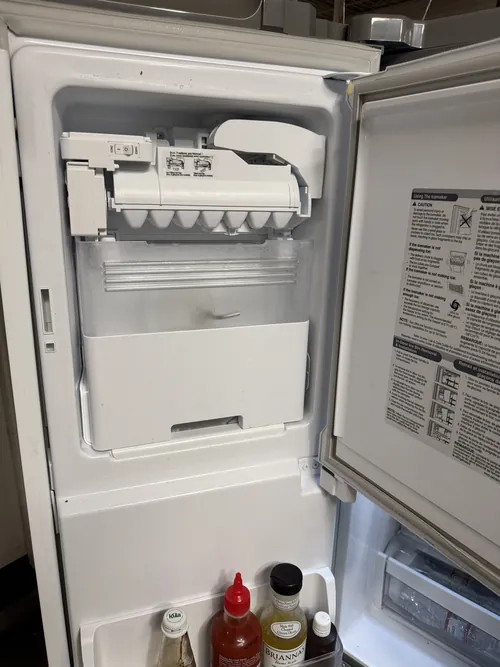

LG Refrigerator Repair: Why Your Refrigerator Runs All the Time
Most homeowners expect their refrigerator to cycle on and off throughout the day. Modern refrigerators are designed to operate when cooling is needed and then temporarily shut down once the desired temperature is reached. However, if your refrigerator seems to run constantly without stopping, it may be trying to warn you that something is affecting its efficiency. While occasional long run times can be normal under certain conditions, continuous operation often indicates a problem that deserves attention. Understanding the most common causes can help homeowners recognize early warning signs and determine when professional LG refrigerator repair may be needed.
Modern LG refrigerators are designed to maintain stable temperatures while maximizing energy efficiency. To accomplish this, the appliance relies on multiple systems working together, including compressors, evaporator fans, temperature sensors, condenser coils, electronic controls, and airflow management components. If any of these systems begin to malfunction, the refrigerator may run longer than normal in an attempt to compensate.
One of the most common reasons a refrigerator runs continuously is dirty condenser coils. Condenser coils are responsible for releasing heat from the refrigeration system. Over time, dust, pet hair, grease, and debris can accumulate on the coils, reducing their ability to transfer heat efficiently. When this happens, the compressor must work harder and operate longer to maintain proper cooling temperatures. Professional LG refrigerator repair often includes inspecting and cleaning condenser coils as part of the diagnostic process.

Damaged door gaskets can also contribute to excessive run times. The refrigerator door seal helps prevent warm air from entering the appliance. If the gasket becomes cracked, worn, or loose, warm air continuously leaks into the refrigerator compartment. As a result, the cooling system must run more frequently to compensate for the temperature increase. Many homeowners overlook door gasket problems because the refrigerator may still appear to cool normally despite the increased workload.
Temperature sensor failures can create conditions that encourage frost accumulation. Modern LG refrigerators rely on sensors to monitor temperatures and regulate cooling cycles. If a sensor provides inaccurate information, the refrigerator may cool excessively or fail to manage defrost cycles properly. Professional LG refrigerator repair often includes testing sensors when frost related problems develop.
Airflow restrictions can create similar symptoms. Refrigerators depend on proper air circulation to distribute cold temperatures throughout the appliance. Blocked vents, frost buildup, failing evaporator fan motors, or overloaded compartments can restrict airflow and reduce cooling efficiency. When cold air cannot move freely, the refrigerator often compensates by running for extended periods.
Many homeowners are surprised to learn that excessive frost buildup can also cause continuous operation. Frost accumulation around evaporator coils restricts airflow and reduces the cooling system’s efficiency. As cooling performance declines, the refrigerator attempts to maintain proper temperatures by running longer and more frequently. In these situations, the visible frost may actually be a symptom of a larger defrost system problem.
Electronic control board issues can affect compressor cycling as well. The control board serves as the central management system for many refrigerator functions. If the board fails to regulate cooling cycles correctly, the compressor may continue operating longer than necessary. Because control board failures can mimic other refrigerator problems, accurate diagnostics are essential before replacing components.
Another possible cause is warm room conditions. During periods of hot weather, refrigerators naturally work harder to maintain internal temperatures. Frequent door openings, large grocery loads, or placing warm food inside the refrigerator can temporarily increase operating time. However, if continuous operation persists even under normal conditions, a mechanical or electronic issue may be present.
Compressor related problems should also be considered. Although modern LG compressors are designed for efficient operation, developing compressor issues can reduce cooling performance and force the system to run continuously. Professional testing helps determine whether the compressor is operating properly or whether another component is affecting system efficiency.
Ignoring excessive run times can eventually lead to higher energy bills and increased wear on refrigerator components. A system that operates continuously experiences more stress than one functioning under normal conditions. Early diagnosis often helps prevent larger repairs while improving appliance efficiency and reliability.
Professional LG refrigerator repair focuses on identifying the exact reason the appliance is running continuously. Technicians evaluate cooling performance, airflow systems, electronic controls, sensors, compressors, and related components to determine the root cause of the problem. Accurate diagnostics help restore normal cycling behavior while protecting the long term health of the refrigerator.
If your refrigerator seems to run constantly, addressing the issue early can help improve energy efficiency, reduce component wear, and prevent future breakdowns. Understanding why a refrigerator operates continuously allows homeowners to recognize potential warning signs and maintain reliable cooling performance for years to come.